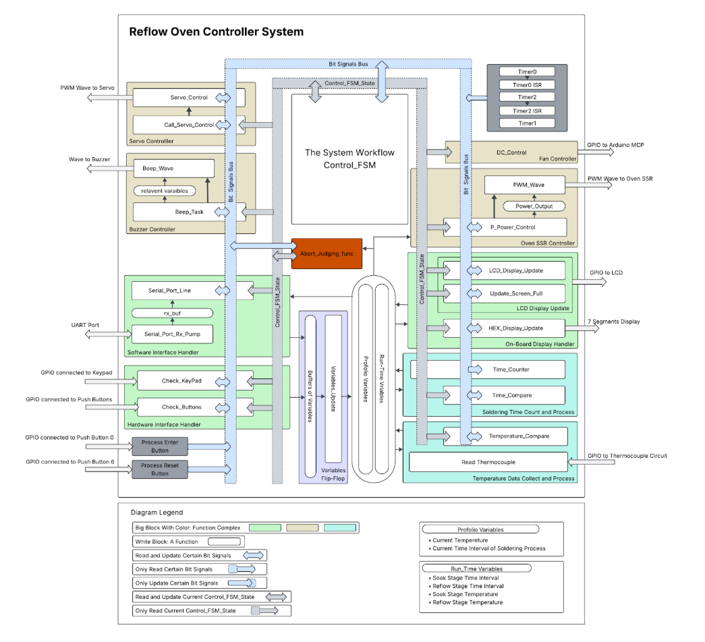
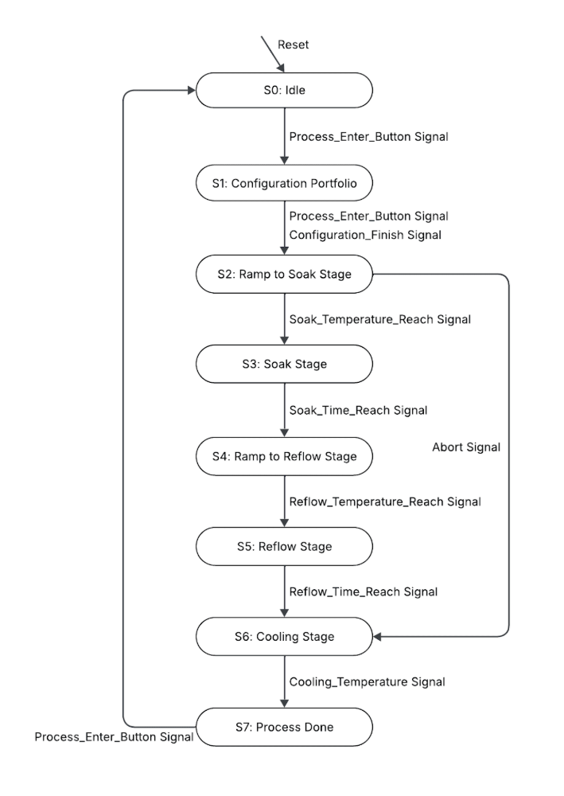
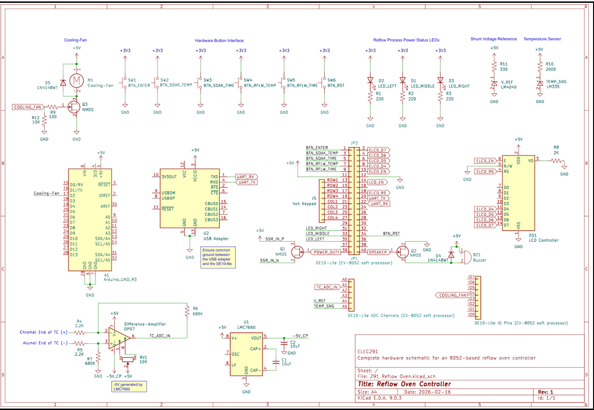

Overview
A microcontroller-based reflow oven controller for a standard 1500 W toaster oven, built around the CV-8052 soft-core processor and programmed entirely in assembly language. The system measures oven temperature via a K-type thermocouple, regulates heating power through PWM-driven SSR control, provides dual user interaction (hardware keypad/LCD + UART PC GUI), and enforces safety constraints—all in real time, without an RTOS.
I designed the publish–subscribe software architecture using bit-addressable memory (BSEG) as a signal bus, wrote all core FSMs including the 7-stage reflow control workflow, and mid-project reviewed and rewrote 2,500+ lines of code to enforce the pub–sub pattern as new features were merged.
Architecture
The system was initially built with a sequential polling loop. As features grew—debouncing, buzzer control, FSM transitions, safety monitoring—the loop introduced latency and blocking. I refactored the entire codebase into a pub–sub architecture: modules publish event flags (temperature reached, time elapsed, state change), and other modules react independently. Timer interrupts generate periodic signals rather than executing control logic directly.
Sequential Polling
Linear loop checking inputs one by one. Growing latency, blocking on LCD writes, poor fault isolation.
WDM: 2.65 / 5Pub–Sub (BSEG)
Decoupled modules via bit-level flags. Deterministic timing, modular, scalable, easy to debug.
WDM: 4.35 / 5Software System
Each functional unit executes once per main-loop iteration under cooperative scheduling—no blocking operations, no nested execution paths. The Control FSM drives the 8-state reflow workflow while 10+ modules (temperature sensing, SSR PWM, buzzer, UART, display, keypad, abort handler) communicate purely through shared bit signals.

Reflow FSM
The 8-state finite state machine governs the full reflow cycle: Idle → Configuration → Ramp to Soak → Soak → Ramp to Reflow → Reflow → Cooling → Done. Transitions are triggered by temperature thresholds or elapsed time. An abort signal from any active state forces immediate transition to cooling with a 10-beep alarm.

Hardware Design
Temperature Sensing
K-type thermocouple → OP07 differential amplifier (G ≈ 309) → LM4040 precision ADC reference. Rolling average filter reduces noise while maintaining response time. Accuracy: ±3 °C.
Power Control
SSR driven via NMOS low-side switch. PWM period: 1500 ms with ~1 W resolution. Full power on ramp, proportional control during soak to limit overshoot.
User Interface
4×4 matrix keypad + 6 push buttons with FSM-based debounce. LCD + 7-segment display for live feedback. Bidirectional UART at 57,600 baud for PC GUI control.
Safety
Auto-abort if oven fails to reach 50 °C within 60 s (thermocouple fault / heater failure). Manual stop independent of system reset. 10-beep alarm on fault.
